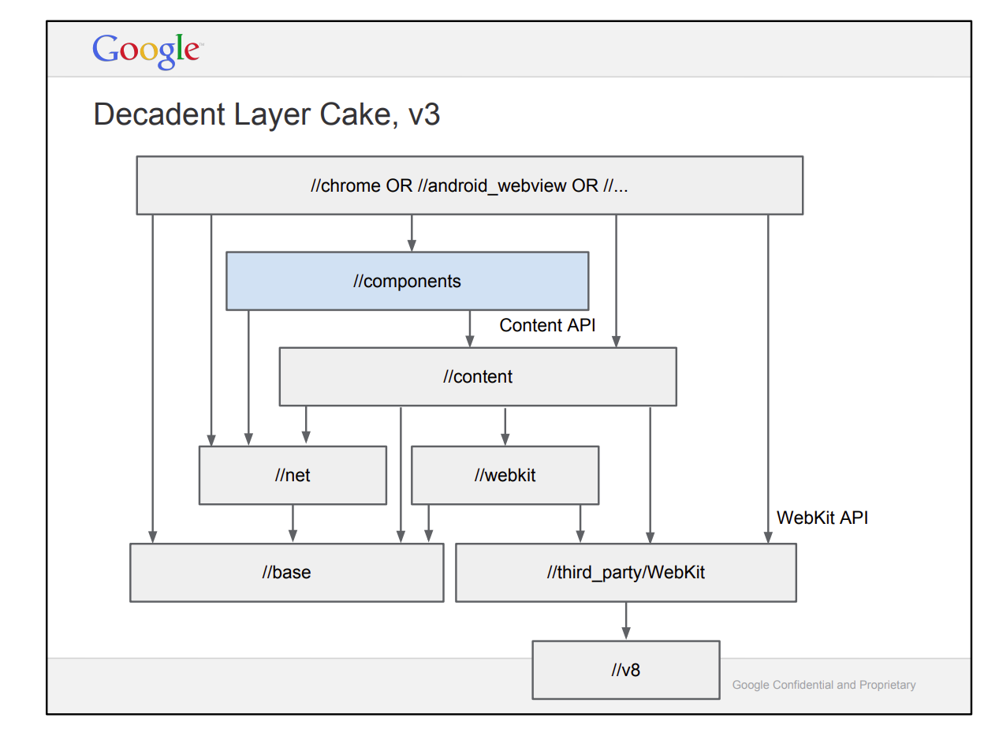
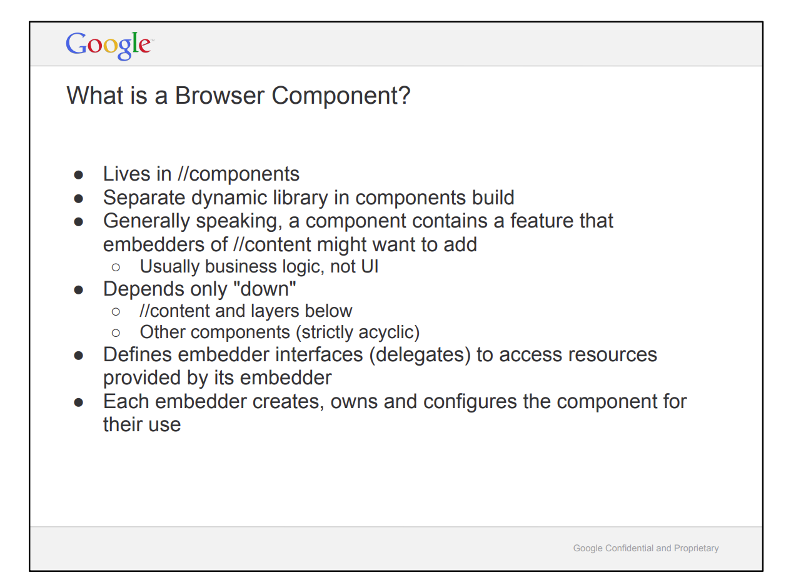
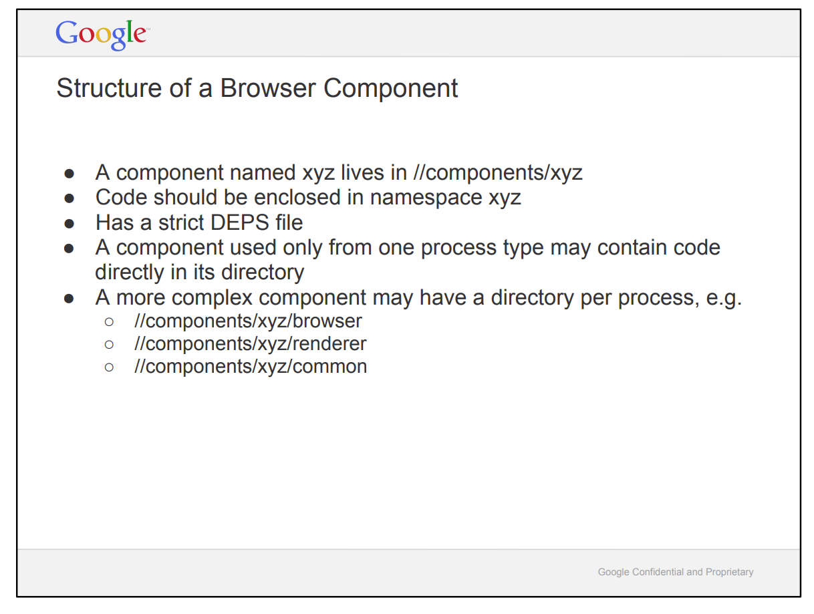

Browser components
Intro
迁移指南: https://www.chromium.org/developers/design-documents/cookbook/
Layered design of a component:

What is a browser component?

Directory structure of a browser component:

Example: safe browsing
以security_interstitials为例来看一下component的相关实现。要测试safe browsing可以用以下网站 https://testsafebrowsing.appspot.com/ （注意在chrome里要打开安全浏览）。
README中提到SecurityInterstitialControllerClient 处理安全浏览相关的提示逻辑，搜它的子类，我们以SSLErrorControllerClient为例。如果尝试访问chrome://interstitial中关于SSL的链接会触发以下调用：

相关的统计数据在单例SafeBrowsingMetricsCollectorFactory中。
https://www.chromium.org/developers/design-documents/safebrowsing/